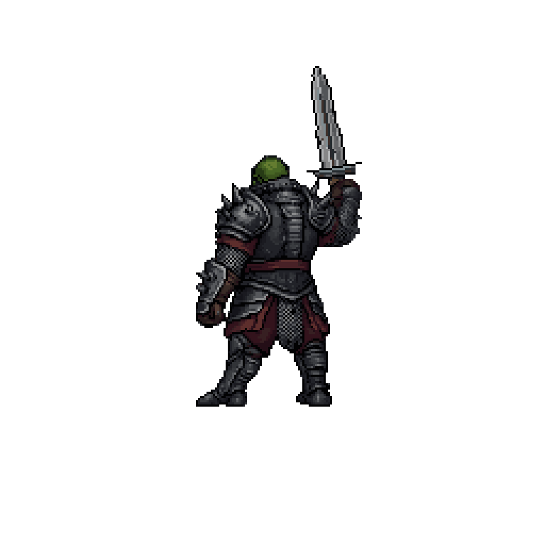
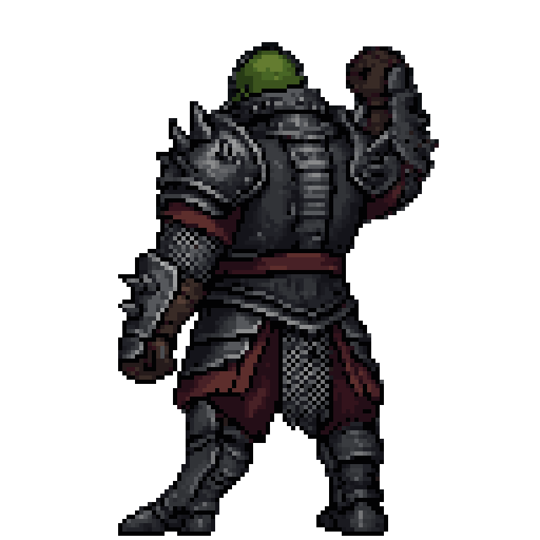

V7_BACK_L_APEX_MANUAL_READY · TECHNICALLY_COMPLETE · VISUAL_REVIEW_REQUIRED · PENDING_CREATOR
Duas poses isoladas; nenhum ciclo ou interpolação. Aseprite Lua, zero geração. Antes do ápice = V6 F04 (loaded-apex); base de autoria = V6 F03 (chamber), exibida separadamente. Antes do impacto = V6 F07.
Relatório · Doadores e juntas · Verificação
F03 é fonte dos pixels preservados; a comparação artística acima usa o ápice declarado F04.


Legenda: amarelo = ombro/úmero, azul = cotovelo/antebraço, rosa = punho e palma. Coordenadas na tabela são nativas; somar [64,64] no composto. Marcações são evidência separada, ausentes dos mestres.